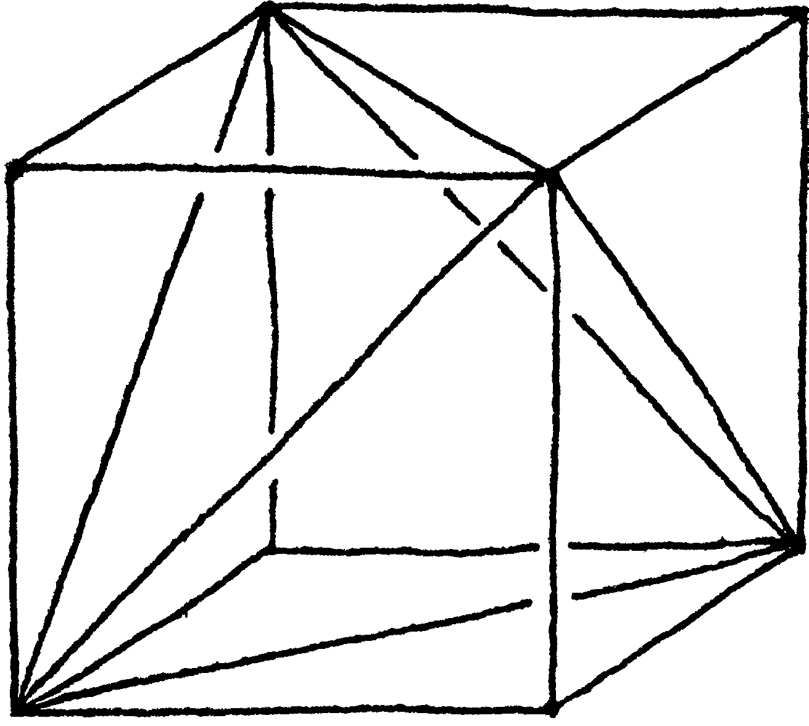
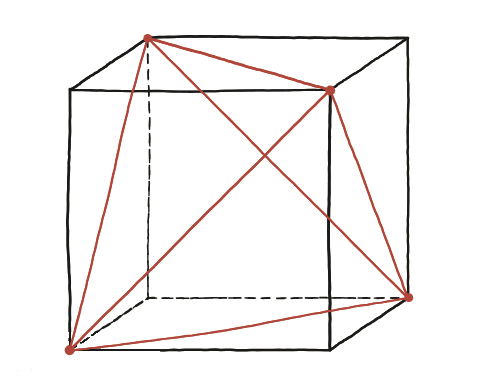

Les diagonals d'un cub formen un tetraedre regular. Quina part del cub ocupa?

Quines diagonals
"Diagonals" vol dir aquí diagonals de cara —no la diagonal principal que travessa l'interior del cub. Cal triar quatre dels vuit vèrtexs del cub de manera que cap parella triada sigui una aresta del cub: només diagonals.
Una tria concreta
Amb el cub de costat 1 i vèrtexs a {0,1}³, es trien (0,0,0), (1,1,0), (1,0,1), (0,1,1). Cal comprovar que cada parella d'aquests quatre punts és a distància √2 —una diagonal de cara—: si ho és per a totes sis parelles, ja hi ha un tetràedre regular.
La construcció

Tancar-ho — dos camins
Hi ha dos camins, i val la pena saber que n'hi ha dos.
El curt fa servir una eina de nivell més avançat: el volum d'un tetràedre és (1/6)|det[B−A, C−A, D−A]|, un determinant 3×3. Amb les coordenades de dalt, aquest càlcul dona directament el resultat.
El llarg no necessita res de nou, i de fet ensenya més. Es mira què queda del cub quan se n'ha tret el tetràedre: quatre trossos, un a cada cantonada no usada. Semblaria que cadascun és una piràmide amb una cara sencera del cub per base (àrea 1) i una aresta per alçada (1) —volum (1/3)(1)(1) = 1/3, que ja és massa per a quatre trossos junts. Mirant-ho més bé: la base de cada tros no és una cara sencera, és mig cara —un triangle rectangle d'àrea 1/2— i l'alçada continua sent 1. Volum de cada tros: (1/3)(1/2)(1) = 1/6. Quatre trossos fan 4/6 = 2/3. El tetràedre és, doncs, 1 − 2/3 del cub —el mateix resultat que el camí curt.
El tetràedre regular format per quatre diagonals de cara d'un cub ocupa exactament 1/3 del seu volum. El cub sencer es reparteix entre aquest tetràedre i quatre petites piràmides de cantonada, cadascuna de volum 1/6.
Comprovació
Amb A=(0,0,0), B=(1,1,0), C=(1,0,1), D=(0,1,1): det[(1,1,0),(1,0,1),(0,1,1)] = 1(0−1)−1(1−0)+0(1−0) = −1−1+0 = −2. Volum = 2/6 = 1/3. El tetràedre ocupa exactament un terç del cub.